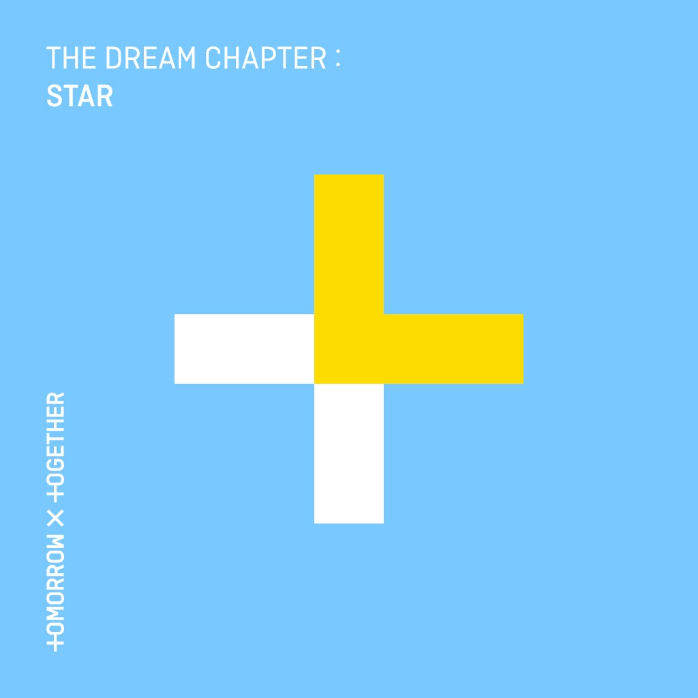
The Dream Chapter: STAR
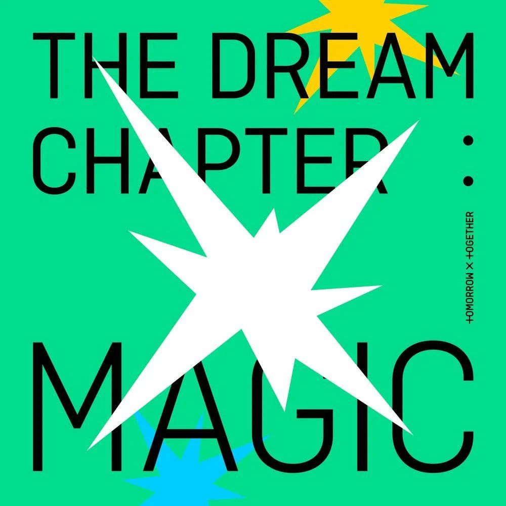
The Dream Chapter: MAGIC
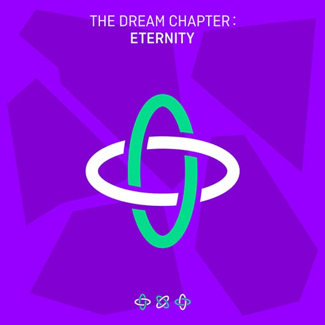
The Dream Chapter: ETERNITY
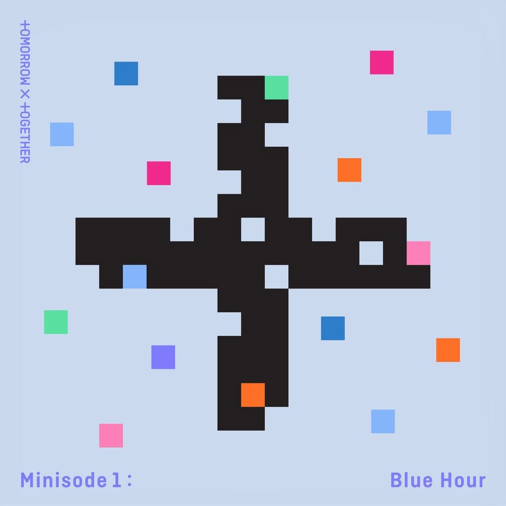
MINISODE1: BLUE HOUR
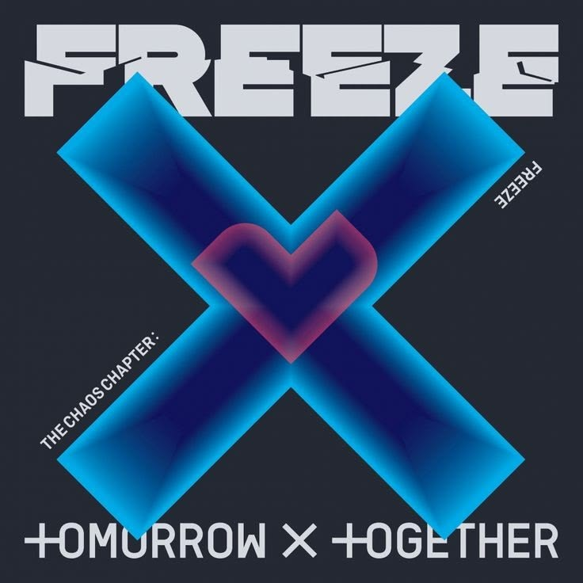
The Chaos Chapter: FREEZE
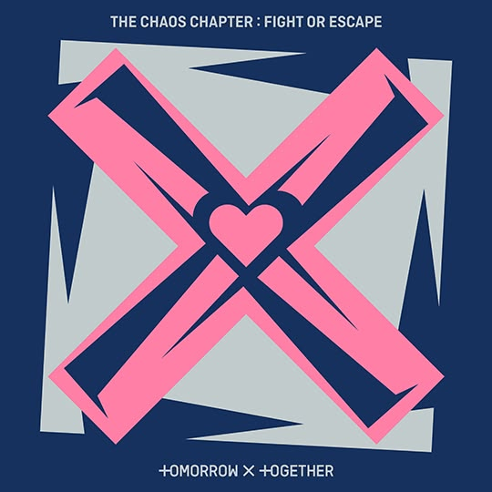
The Chaos Chapter: FIGHT OR ESCAPE
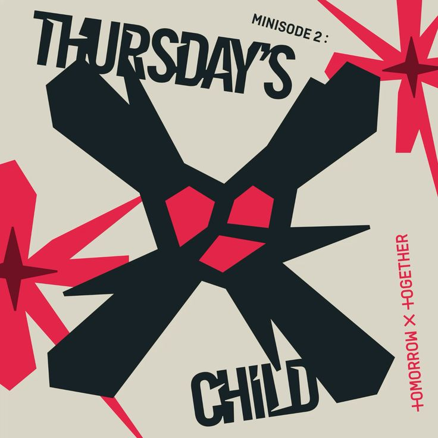
MINISODE2: THURSDAY'S CHILD
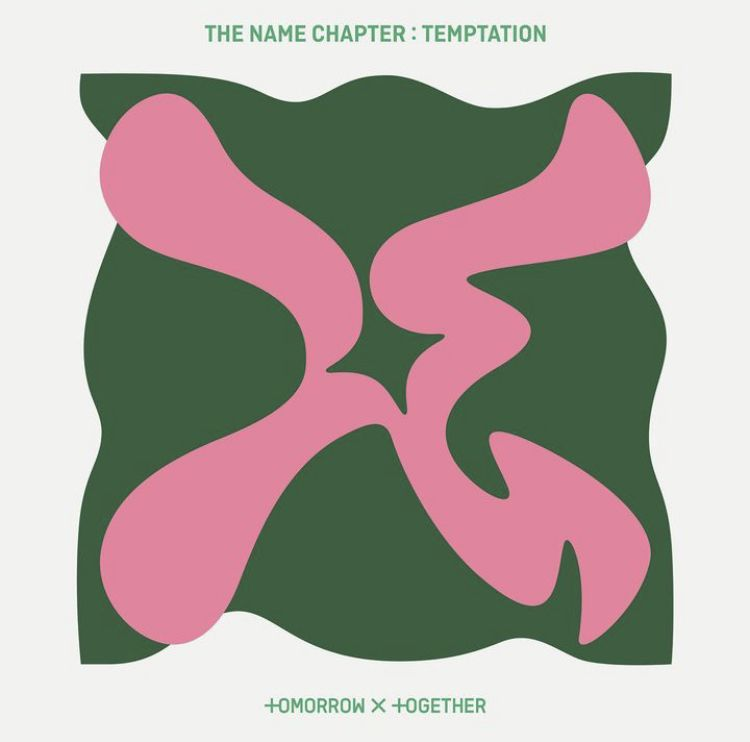
The Name Chapter: TEMPTATION
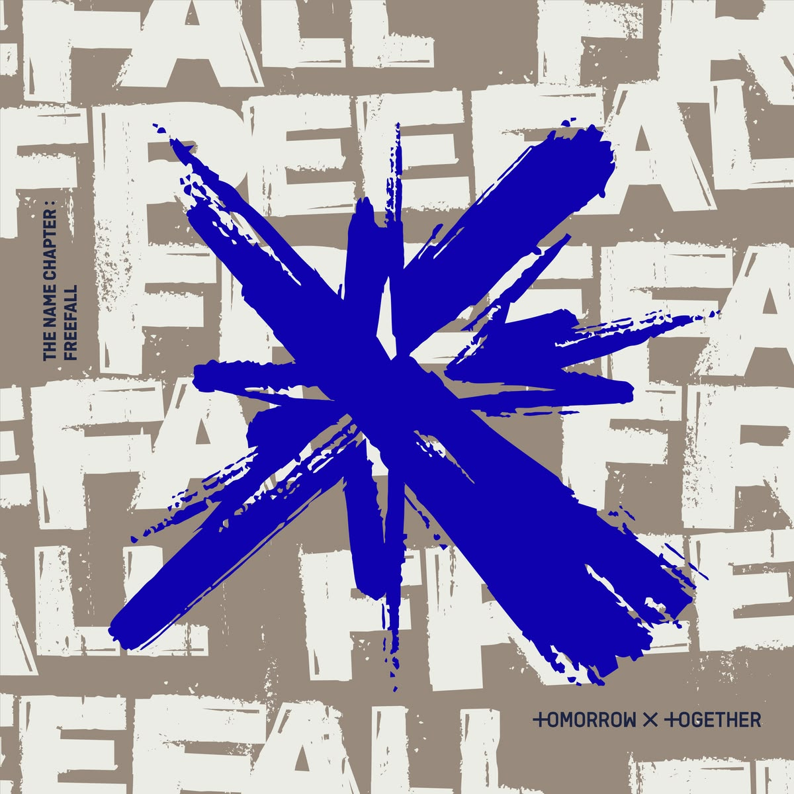
The Name Chapter: FREEFALL
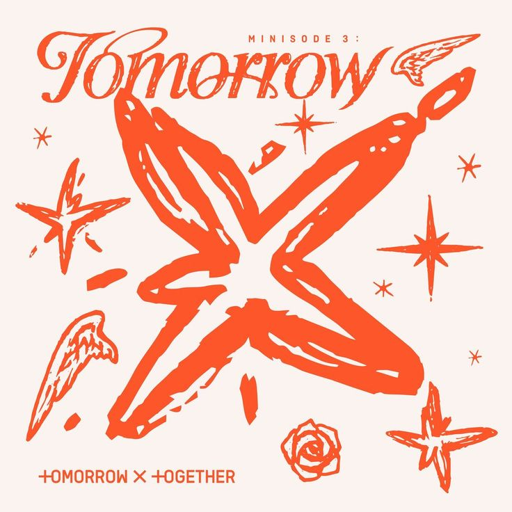
MINISODE3: TOMORROW
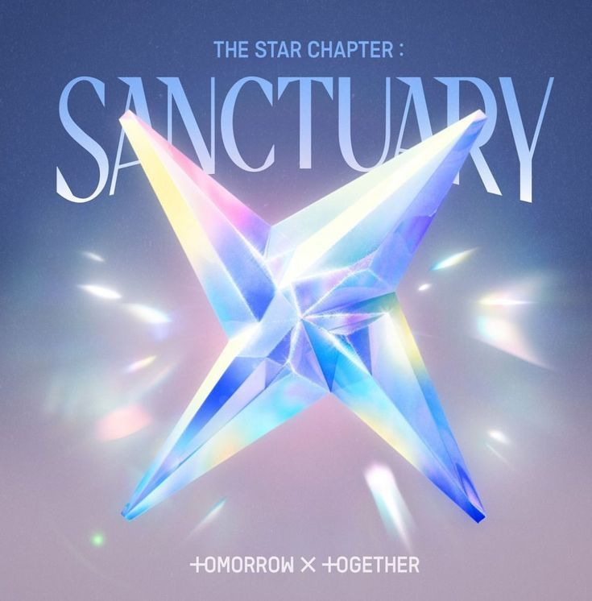
The Star Chapter: SANCTUARY
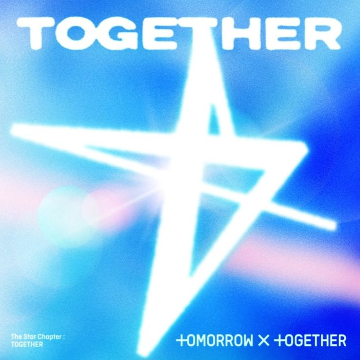
The Star Chapter: TOGETHER
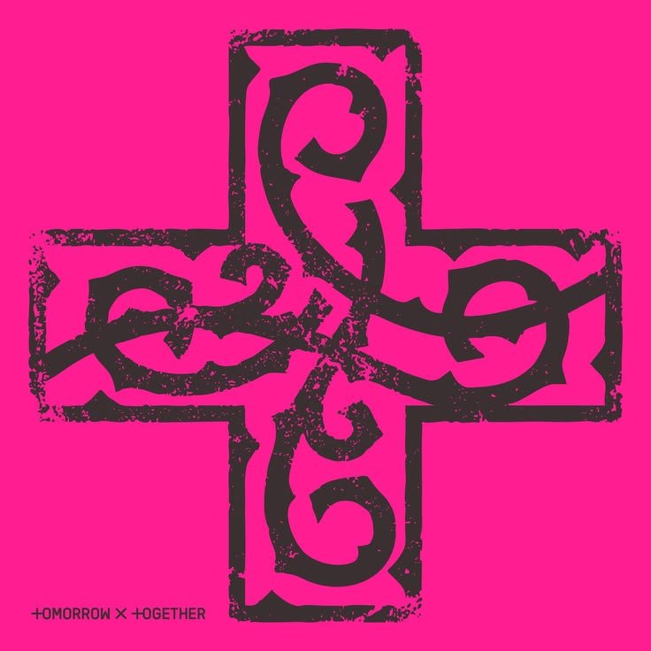
7th Year: A MOMENT OF STILLNESS IN THE THORNS
The Dream Chapter: STAR
Mientras pasan de la infancia a la adolescencia, los chicos se han reunido bajo UN SOLO SUEÑO. Para TOMORROW X TOGETHER, las estrellas son otro nombre para los sueños: las emociones que crecen dentro de ti mientras miras el cielo estrellado, la emoción que aumenta al pensar en el mañana. Perseguir las estrellas significa recordar los sueños que tenías en tu infancia. ‘The Dream Chapter’ contará las historias de todo aquello que encontraron mientras crecían. Una recopilación de 5 canciones en total, el álbum ‘The Dream Chapter: STAR’ expresa la “felicidad y emoción de conocer a alguien especial” de TOMORROW X TOGETHER. La historia de los chicos comienza con ‘Blue Orangeade’ y termina con ‘Nap of a star’ , narrando cómo, juntos, pueden hacer posible aquello que parecía imposible cuando estaban solos.
Volver a los álbumesThe Dream Chapter: MAGIC
TOMORROW X TOGETHER continúa contando su historia de crecimiento y las experiencias que viven a través del concepto de The Dream Chapter. Mientras que The Dream Chapter: STAR hablaba sobre la “felicidad y emoción de conocer a alguien especial”, ‘The Dream Chapter: MAGIC’ cuenta las “aventuras mágicas” que los chicos viven junto a sus amigos, quienes pueden ser diferentes, pero también tienen cosas en común. A través de estas aventuras, los chicos muestran los cambios, las confusiones y todas esas emociones que aparecen mientras pasan de la infancia a la adolescencia. El álbum tiene 8 canciones, entre ellas “New Rules”, que habla sobre querer crear sus propias reglas; “9 and Three Quarters (Run Away)”, que es la canción principal; “Roller Coaster”, que compara las emociones de crecer con un viaje en montaña rusa; y “Angel Or Devil”, que representa la lucha entre dos voces dentro de uno mismo.
Volver a los álbumesThe Dream Chapter: ETERNITY
Este álbum continúa la historia de The Dream Chapter: STAR y The Dream Chapter: MAGIC, siguiendo las experiencias de los chicos. Sin embargo, al enfrentarse a la realidad, comienzan a aparecer conflictos y diferencias entre ellos. A pesar de esto, mantienen la esperanza de que el tiempo que comparten pueda durar para siempre. El álbum cuenta con 6 canciones: “Drama”, que da inicio al álbum; la canción principal “Can’t You See Me?”; una nueva versión de “Fairy of Shampoo”; “Maze in the Mirror”, escrita por los cinco integrantes; “PUMA”, con una letra muy particular; y “Eternally”, que presenta un estilo más experimental.
Volver a los álbumesMINISODE1: BLUE HOUR
El miniálbum cuenta con 5 canciones: “Ghosting”, que habla de una relación que termina de manera repentina; “Blue Hour”, la canción principal, que representa un momento especial que parece detener el tiempo; “We Lost the Summer”, inspirada en los cambios y pérdidas que dejó la pandemia; “Wishlist”, que expresa el deseo de compartir momentos con alguien especial; y “Way Home”, que habla sobre encontrar un lugar seguro junto a otra persona.
Volver a los álbumesThe Chaos Chapter: FREEZE
Esta nueva historia comienza cuando los sueños de los chicos se enfrentan a la realidad. Los problemas y cambios del mundo, incluyendo la pandemia de COVID-19, hacen que el protagonista sienta que todo a su alrededor se está desmoronando, dejándolo vacío, pequeño e incapaz de avanzar. Sin embargo, todo cambia cuando aparece. Gracias a esa persona, comienza a ver el mundo de otra manera y descubre el amor, llegando a sentir que esa persona se convierte en su mundo verdadero y único. El álbum cuenta con 8 canciones, entre ellas “Anti-Romantic”, que habla del miedo a enamorarse; “0X1=LOVESONG (I Know I Love You)”, la canción principal, que representa encontrar a una persona que se convierte en tu único mundo; “Magic”, “소악행 (Ice Cream)”, “What if I had been that PUMA”, “No Rules”, “Dear Sputnik” y “Frost”.
Volver a los álbumesThe Chaos Chapter: FIGHT OR ESCAPE
The Chaos Chapter muestra un mundo en el que los sueños han desaparecido y son reemplazados por una realidad cada vez más difícil. Mientras todo lo que el chico conocía comienza a derrumbarse, él se siente pequeño, vacío y sin saber cómo avanzar. Pero despierta en él un nuevo sentimiento: el amor. Ahora quiere salir de ese estado y tiene que tomar una decisión: luchar contra el mundo o escapar junto a esa persona. The Chaos Chapter: FIGHT OR ESCAPE cuenta con 11 canciones. Ocho de ellas ya habían aparecido en The Chaos Chapter: FREEZE, mientras que esta nueva versión incluye tres canciones nuevas: “LO$ER=LO♡ER”, “MOA Diary (Dubaddu Wari Wari)” y “0X1=LOVESONG (I Know I Love You) feat. Seori (Emocore Mix)”.
Volver a los álbumesMINISODE2: THURSDAY'S CHILD
En minisode 2: Thursday's Child, los chicos viven la experiencia de su primer desamor, enfrentándose a emociones muy fuertes como la negación, tristeza, enojo y pérdida. El protagonista pasa por cada una de estas etapas hasta aceptar finalmente que esa relación que tanto valoraba ha llegado a su fin. Mientras deja atrás la adolescencia y comienza a acercarse a la adultez, también empieza a conocerse mejor y a entender el mundo que lo rodea. Al final, surge una nueva pregunta: ¿qué camino tomará ahora para seguir creciendo? El álbum cuenta con 5 canciones: “Good Boy Gone Bad”, “Trust Fund Baby”, “Opening Sequence” y los primeros dos temas de unidades del grupo, “Lonely Boy” y “Thursday's Child Has Far To Go”. Los cinco integrantes participaron creativamente en todas las canciones del EP.
Volver a los álbumesThe Name Chapter: TEMPTATION
The Name Chapter: TEMPTATION representa a los jóvenes que están a punto de entrar en la adultez. Después de pasar por diferentes conflictos y momentos difíciles, los chicos sienten el deseo de dejar su crecimiento de lado por un momento y disfrutar de la libertad de Neverland. A pesar de esta tentación, continúan avanzando y enfrentándose a los desafíos del mundo. Su historia refleja ese proceso de crecer, tomar decisiones y aprender de las experiencias que forman parte de esta etapa de la vida. El álbum cuenta con 5 canciones: “Sugar Rush Ride”, la canción principal; “Devil by the Window”; “Happy Fools (feat. Coi Leray)”; “Tinnitus (Wanna be a rock)”; y “Farewell, Neverland”.
Volver a los álbumesThe Name Chapter: FREEFALL
The Name Chapter: FREEFALL cuenta la historia de jóvenes que habían estado evitando la adultez y escapando de la realidad, pero que finalmente deciden enfrentarla. Caer de lleno en la realidad no es fácil y puede resultar doloroso, pero ellos toman la decisión de seguir adelante y afrontar todo lo que los rodea. Esta etapa representa el proceso de crecer, aceptar la realidad y continuar avanzando a pesar de las dificultades. Su historia busca transmitir consuelo y empatía a quienes también están persiguiendo sus propios sueños. El álbum cuenta con 9 canciones, entre ellas “Growing Pain”, “Chasing That Feeling”, “Back for More (TXT Ver.)”, “Dreamer”, “Deep Down”, “Happily Ever After”, “Skipping Stones”, “Blue Spring” y “Do It Like That”. Además, “Chasing That Feeling (English Ver.)” está disponible únicamente en formato digital.
Volver a los álbumesMINISODE3: TOMORROW
Minisode 3: TOMORROW cuenta la historia de un chico que recuerda una promesa del pasado y decide buscar a la persona con quien la hizo. Al recordar los sueños y deseos que compartían cuando eran más jóvenes, decide encontrarla para poder seguir avanzando hacia el mañana. Para él, el mañana junto a esa persona representa esperanza y salvación. El álbum cuenta con 7 canciones: “I’ll See You There Tomorrow”, que habla sobre la confianza en un reencuentro; “- --- -- --- ·-· ·-· --- ·--”, que representa una señal de esperanza hacia un futuro compartido; “Deja vu”, sobre sentir que un futuro reencuentro ya ha ocurrido antes; “Miracle”, que expresa lo especial de una relación que parece un milagro; “The Killa (I Belong to You)”, una poderosa serenata; “Quarter Life”, que refleja la ansiedad y la confianza en uno mismo al llegar a esta etapa de la vida; y “Deja vu (Anemoia Remix)”, un remix que resalta el lado sentimental de la canción original.
Volver a los álbumesThe Star Chapter: SANCTUARY
Para TXT, todo esto se resume en una palabra: amor. El álbum muestra diferentes formas de sentirlo, desde la emoción de volver a estar juntos en “Heaven”, la ilusión por un futuro compartido en “Over The Moon” y un amor que cada vez se hace más profundo en “Danger”, hasta el deseo de proteger aquello que más importa en “Resist (Not Gonna Run Away)”. También aparecen expresiones más personales de amor en “Forty One Winks” y el sentimiento de reconocer a esa persona como tu única y especial en “Higher Than Heaven”.
Volver a los álbumesThe Star Chapter: TOGETHER
El álbum muestra diferentes formas de estar juntos y compartir el amor. Desde sentir que todo está bien mientras estás con alguien especial en “Upside Down Kiss”, hasta decidir salvar a esa persona y avanzar juntos en “Beautiful Strangers”. También habla de un amor intenso en “Ghost Girl”, los momentos tranquilos de dos personas en “Sunday Driver” y el deseo de conocer mejor a quien amas en “Dance With You”. A esto se suman la felicidad de compartir en “Take My Half”, el ánimo para seguir adelante incluso en noches difíciles con “Bird of Night” y, finalmente, la felicidad que solo aparece cuando “nosotros” estamos juntos en “Song of the Stars”. Así, TOGETHER reúne el significado de estar unidos y muestra cómo la compañía de alguien especial puede ayudarnos a seguir adelante.
Volver a los álbumes7th Year: A MOMENT OF STILLNESS IN THE THORNS
La frase “A Moment of Stillness in the Thorns” representa un momento de calma en medio de todas esas dificultades. En esta etapa, los cinco integrantes hacen una pausa para mirar hacia atrás, reflexionar sobre lo que han vivido y pensar en el camino que tienen por delante. Este álbum marca el inicio de un nuevo capítulo para el grupo, mostrando un momento más reflexivo en el que, después de todo lo recorrido, se detienen por un instante para preguntarse dónde están ahora y hacia dónde quieren seguir.
Volver a los álbumes